November 17th, 2007-I’ve got 9000 mosquito bites, probably have malaria, dengue and a few others but life is good in the Caribbean. I even heard its 32 degrees in Chicago and Detroit and I feel sooo bad for those unfortunate souls, if it makes you feel better it did rain today, but then it was 82 and we even had a full rainbow.I cut the last post short but the good news is I figured out with the help of some people how to minimize the pictures so now they are actually viewable to people sitting less than 500 feet from the computer. Good news for you, bad news for the people in the cubicle down the hall from you who used to be able to see all those giant photos.Does this photo look like a famous ESPN sportscaster with a certain lazy eye, or is it me? “OK Spot listen, everybody makes mistakes, your girlfriend and that labrador from down the block, it was just a fling, don’t do it man!”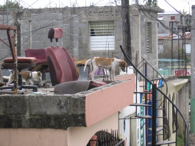The kids here play baseball all the time every day, the places we go and work don’t have diamonds so they play in the streets using a broken broomstick as a bat and a bottle cap as a ball. They throw the bottle cap like a frisbee and it curves all over the place. These kids hit the bottle cap 9 out of 10 times. I tried it, and little Juan struck me out 7 times. All the kids gathered and watched and of course cheered like crazy every time I swung and missed.One morning two days ago, we got picked up by a man who was taking us to the Government office of Social Services to see if we could buy food directly from the govt. to bring out to the terribly poor neighborhoods near the Haiti border. This man drove like he either had no license, had his license revoked, or his wife was in labor at the Social Services office. He insisted in Spanish he had never been in an accident. I didn’t believe him. Greg, the guy I am learning from in this organization then tells us a story that one day he was driving like a maniac (suprise) and he crashed into an antique wooden car and destroyed part of the side of the car.Apparently, this car had taken years to build and was the only wooden car in the Dominican Republic. The kicker is that Greg is watching the news two weeks later after the ‘accident’ and there is a special feature on the car and how it is the only wooden car in the Dominican and it’s fully operational. The camera pans back and moves around the car until it gets to the other side where there is a giant DENT and the mirror is missing. We asked the driver about this story and all he did was let out a big chuckle.Yesterday we drove to Barahona on the way to the Haiti border. These communities were set up by the sugar cane companies to house Haitian workers and their families. ‘House’ would not be the correct word, you couldn’t call these houses, they were shacks, filled with mud and standing water. The flood water from Tropical Storm Noel had still not subsided and 13 days later, they still didn’t have power. The water had risen up to an average man’s chest and mattresses, clothes, were all ruined. Mud was everywhere and most roads through each community were impassable in our van.We delivered 400 bags of food to various communities, one going to each family. The bags consisted of rice, beans, sugar, flour, powdered milk and salt. For those that haven’t been to a third world country, the children always stand out. They love to see white people and as soon as your vehicle pulls up, it is immediately surrounded by children who want to be held. They don’t want our money, they just want us to hold them and play with them. Not once will they ever ask you for money. They did ask me for my empty apple juice bottle, which they took from me only after surrounding me and grabbing it.The kids are by far the best part about this experience. I’ve seen poverty in the past 12 days that most people in the U.S. never get to experience. I’ve seen enough poverty in my last trip to Mexico that it doesn’t really affect me as much as it used to in Mexico. But I love the kids. I love how they are always smiling and wanting to play. I am as interested in them as they are in me. The kids told me yesterday that they had never seen white (blonde) hair grow out of someone’s arms before and spent minutes pulling at it.We spent a good amount of time in the communities talking with various leaders, both religious and non, and even met a few other NGOs working in the communities. Now I am not one to bash other NGOs because we are few and far between and all in it together. Children of the Nations was there in communities with houses still filled with mud so deep you couldn’t walk through it. They were building a basketball court. That’s all. You all are smart people, take from that what you will. OXFAM, a huge non-profit specializing in fair-trade based out of London sent two big trucks over full of supplies and food to a woman named Connie working for a non-profit called COPA. Connie seemed like she had been in country forever and knew the communities left and right. She looked like she could be anyone’s grandma, white hair, pale white skin, wearing a visor and jeans pulled up real high. Now she’s been fighting the good fight for a long while, and I admire that.That night we slept in a house on the top of this hill that was owned by a friend of Greg’s. The house was beautiful and I slept on a balcony because it is so nice outside here at night. All night we heard shotgun blasts followed by handgun fire. The police and the gangs in these communities fight endlessly all night against one another. Some of the shots sounded dangerously close but we knew they were quite a few miles away and we are miles away from the communities. The third world is a land of lawlessness. Even on our ride out, we were driving through a police checkpoint and one of the officers flagged us to stop and pull over from his chair on the side of the road. Well, we didn’t stop and the officer didn’t chase. Even if he had chased, 200 pesos in his pocket later and we’d be home free.They call me Carlos here because no one can pronounce my first name because of the J sound, which doesn’t exist in the Spanish language. I did get to go to one beach last week, it’s nothing special, but its probably one more beach than all of you have been to in the past month. Sorry, that was low. I love all of my loyal readers, even if I have to continually pay some of you to visit the site. great success!
“OK Spot listen, everybody makes mistakes, your girlfriend and that labrador from down the block, it was just a fling, don’t do it man!”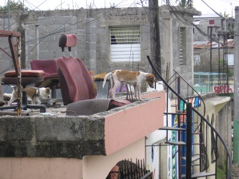The kids here play baseball all the time every day, the places we go and work don’t have diamonds so they play in the streets using a broken broomstick as a bat and a bottle cap as a ball. They throw the bottle cap like a frisbee and it curves all over the place. These kids hit the bottle cap 9 out of 10 times. I tried it, and little Juan struck me out 7 times. All the kids gathered and watched and of course cheered like crazy every time I swung and missed.One morning two days ago, we got picked up by a man who was taking us to the Government office of Social Services to see if we could buy food directly from the govt. to bring out to the terribly poor neighborhoods near the Haiti border. This man drove like he either had no license, had his license revoked, or his wife was in labor at the Social Services office. He insisted in Spanish he had never been in an accident. I didn’t believe him. Greg, the guy I am learning from in this organization then tells us a story that one day he was driving like a maniac (suprise) and he crashed into an antique wooden car and destroyed part of the side of the car.Apparently, this car had taken years to build and was the only wooden car in the Dominican Republic. The kicker is that Greg is watching the news two weeks later after the ‘accident’ and there is a special feature on the car and how it is the only wooden car in the Dominican and it’s fully operational. The camera pans back and moves around the car until it gets to the other side where there is a giant DENT and the mirror is missing. We asked the driver about this story and all he did was let out a big chuckle.Yesterday we drove to Barahona on the way to the Haiti border. These communities were set up by the sugar cane companies to house Haitian workers and their families. ‘House’ would not be the correct word, you couldn’t call these houses, they were shacks, filled with mud and standing water. The flood water from Tropical Storm Noel had still not subsided and 13 days later, they still didn’t have power. The water had risen up to an average man’s chest and mattresses, clothes, were all ruined. Mud was everywhere and most roads through each community were impassable in our van.We delivered 400 bags of food to various communities, one going to each family. The bags consisted of rice, beans, sugar, flour, powdered milk and salt. For those that haven’t been to a third world country, the children always stand out. They love to see white people and as soon as your vehicle pulls up, it is immediately surrounded by children who want to be held. They don’t want our money, they just want us to hold them and play with them. Not once will they ever ask you for money. They did ask me for my empty apple juice bottle, which they took from me only after surrounding me and grabbing it.The kids are by far the best part about this experience. I’ve seen poverty in the past 12 days that most people in the U.S. never get to experience. I’ve seen enough poverty in my last trip to Mexico that it doesn’t really affect me as much as it used to in Mexico. But I love the kids. I love how they are always smiling and wanting to play. I am as interested in them as they are in me. The kids told me yesterday that they had never seen white (blonde) hair grow out of someone’s arms before and spent minutes pulling at it.We spent a good amount of time in the communities talking with various leaders, both religious and non, and even met a few other NGOs working in the communities. Now I am not one to bash other NGOs because we are few and far between and all in it together. Children of the Nations was there in communities with houses still filled with mud so deep you couldn’t walk through it. They were building a basketball court. That’s all. You all are smart people, take from that what you will. OXFAM, a huge non-profit specializing in fair-trade based out of London sent two big trucks over full of supplies and food to a woman named Connie working for a non-profit called COPA. Connie seemed like she had been in country forever and knew the communities left and right. She looked like she could be anyone’s grandma, white hair, pale white skin, wearing a visor and jeans pulled up real high. Now she’s been fighting the good fight for a long while, and I admire that.That night we slept in a house on the top of this hill that was owned by a friend of Greg’s. The house was beautiful and I slept on a balcony because it is so nice outside here at night. All night we heard shotgun blasts followed by handgun fire. The police and the gangs in these communities fight endlessly all night against one another. Some of the shots sounded dangerously close but we knew they were quite a few miles away and we are miles away from the communities. The third world is a land of lawlessness. Even on our ride out, we were driving through a police checkpoint and one of the officers flagged us to stop and pull over from his chair on the side of the road. Well, we didn’t stop and the officer didn’t chase. Even if he had chased, 200 pesos in his pocket later and we’d be home free.They call me Carlos here because no one can pronounce my first name because of the J sound, which doesn’t exist in the Spanish language. I did get to go to one beach last week, it’s nothing special, but its probably one more beach than all of you have been to in the past month. Sorry, that was low. I love all of my loyal readers, even if I have to continually pay some of you to visit the site. great success! Go Spartans, Pistons, and of course, Buckeyes.From the barrio known as Ensanche Quisaqueya,Backpacker Acker
Go Spartans, Pistons, and of course, Buckeyes.From the barrio known as Ensanche Quisaqueya,Backpacker Acker
To the West Coast and Back…
{kind=link}
Bienvenido a Santo Domingo
November 13th- Santo Domingo, Dominican Republic.It has been a great while since I’ve written on Backpacker Acker. My appreciation to those who still visit the site despite my lack of updates. I had high hopes for this website and still do, and hope that every update continues to motivate, entertain, and most importantly, inform my readers of the situation outside his or her cubicle, office, classroom, or home. Globalization has its many drawbacks, but being able to tell all of my friends, family, and fellow travelers I have met about what I am doing across oceans, in different countries, is amazing.My current travels have taken me to a poor island with amazing people in the Caribbean. I will admit I have gone on a lot of trips for myself, Australia, Hawaii, Europe, Costa Rica, various islands around the world come to mind. However, this trip will hopefully not follow that same trend. Before jumping into corny jokes, gross generalizations, and smart-ass comments, let me give those who don’t know a background of what I am doing, where I am, and who I’m praying to (here’s a hint…he’s got long hair, a beard, and we share the same initials).Let me also preface this article by saying I haven’t had an alcoholic drink in over 9 days. Those who are followers of the website know this is a rarity. Don’t be alarmed though, I’ve taken a liking to rubber cement, so this should still be an entertaining article. This will also not be any short, off-the-top-of-my-head article, so if you are looking for a quick fix, and a few laughs, stop reading now. However, if you are bored at work, looking for a way to kill 20 minutes and wish you were me for 20 minutes, read on mi amigo. You are about to enter the world of Backpacker Acker.I am volunteering for the International Non-Profit “Foundation for Peace” in Santo Domingo, Dominican Republic. FFP works in various communities through out the Dominican Republic with such projects as building churches, schools, and most importantly, (my focus) potable water systems. I am staying in a house with 4 staff members from the United States, three women ages 24, 25, and 27, along with one other guy who is 25 from Central New Jersey. Also living in the house are 5 Dominican women who cook and work in the school located in the back of the house where 100 students attend class each day. The students are all between the ages of 5 and 7, and they are wild little people. My roommate’s name is Isidro, he is of Haitian descent but was born here in the Dominican and speaks only Spanish. I will try and post of a picture of him soon, but here is a picture of my bed/room. The house is located in a blue-collar section of Santo Domingo, aka, I don’t walk alone at night anywhere because I’ll get jacked. During the day it is safe to roam the city. Our house has gates which are locked every night and there are bars on every window and door. Dominicans are very close with their families, and there are always people coming and going from the house visiting friends, family who live/work in the house. I’m supposed to go lift weights with one of them on Thursday, it costs a whopping 20 pesos to work out for one hour (about 60 cents).We eat mostly rice (ok all rice) and beans, along with whatever else the girls cook for us. The only deal is we have to do all the dishes and put all the food away after each meal. There is no hot water so every shower is a damn cold experience. At night, it barely cools down to around 85 degrees so each person has a personal fan that blows right on our faces all night. The problem lies in that rolling blackouts in this country happen every day. Today, we didn’t have power for a solid 12 hours straight, no toilets can flush so I leave the imagination to you all. Usually we have power around 16 hours a day. There was a cockroach in my bed two nights ago, roughly the size of my pinkie. I smashed him to smitherines and laid him out in the hallway as a warning to his family that Backpacker Acker+cockroaches=byebye cockroaches. Somebody make up a definition for smitherines and put it on Wikipedia. I am blacklisted from Wikipedia for repeatedly entering “bumbardment” as the act of street bums begging for money all at once. Apparently you must site sources, go figure.The first couple days were uneventful, we visited various villages where past projects took place to get an idea of what kind of work the organization does. Here is a photo of a boy named Jayson, standing in front of his shack. This photo makes me sad, cant really tell ya why…except if you saw the shack he was living in. damn.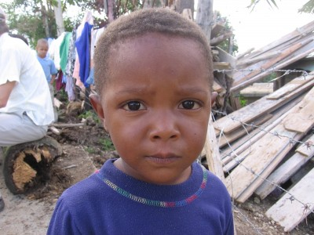Tomorrow, I will go to the Haiti/Dominican Republic border with an Army escort to pass out rice to people who have been forced from their homes by the Tropical Storm Noel that passed through. They haven’t had power in 3 weeks. They are all Haitians that speak Creole. Will be back on Saturday, like to get emails from everyone. I have a lot more to write so check again next weekend.Take care, be safe, and I leave you with one more photo.From a beautiful island with even more beautiful people,Backpacker Acker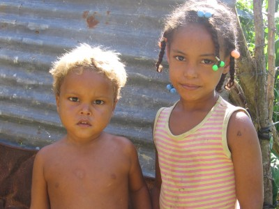Then I made them smile…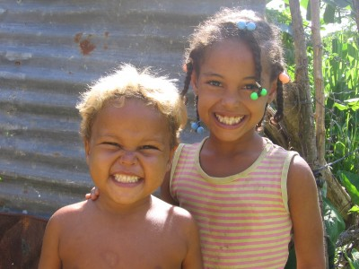And if that don’t make you smile…well there’s not much more Backpacker Acker can do for ya.Until next time.Paz
The house is located in a blue-collar section of Santo Domingo, aka, I don’t walk alone at night anywhere because I’ll get jacked. During the day it is safe to roam the city. Our house has gates which are locked every night and there are bars on every window and door. Dominicans are very close with their families, and there are always people coming and going from the house visiting friends, family who live/work in the house. I’m supposed to go lift weights with one of them on Thursday, it costs a whopping 20 pesos to work out for one hour (about 60 cents).We eat mostly rice (ok all rice) and beans, along with whatever else the girls cook for us. The only deal is we have to do all the dishes and put all the food away after each meal. There is no hot water so every shower is a damn cold experience. At night, it barely cools down to around 85 degrees so each person has a personal fan that blows right on our faces all night. The problem lies in that rolling blackouts in this country happen every day. Today, we didn’t have power for a solid 12 hours straight, no toilets can flush so I leave the imagination to you all. Usually we have power around 16 hours a day. There was a cockroach in my bed two nights ago, roughly the size of my pinkie. I smashed him to smitherines and laid him out in the hallway as a warning to his family that Backpacker Acker+cockroaches=byebye cockroaches. Somebody make up a definition for smitherines and put it on Wikipedia. I am blacklisted from Wikipedia for repeatedly entering “bumbardment” as the act of street bums begging for money all at once. Apparently you must site sources, go figure.The first couple days were uneventful, we visited various villages where past projects took place to get an idea of what kind of work the organization does. Here is a photo of a boy named Jayson, standing in front of his shack. This photo makes me sad, cant really tell ya why…except if you saw the shack he was living in. damn.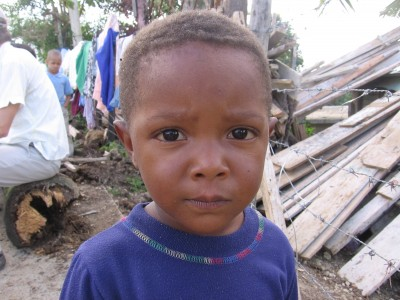Tomorrow, I will go to the Haiti/Dominican Republic border with an Army escort to pass out rice to people who have been forced from their homes by the Tropical Storm Noel that passed through. They haven’t had power in 3 weeks. They are all Haitians that speak Creole. Will be back on Saturday, like to get emails from everyone. I have a lot more to write so check again next weekend.Take care, be safe, and I leave you with one more photo.From a beautiful island with even more beautiful people,Backpacker Acker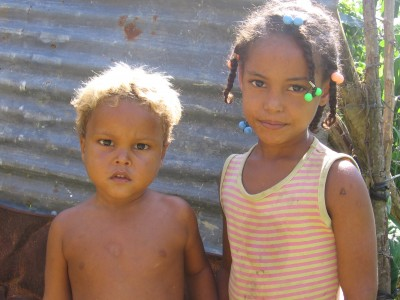Then I made them smile…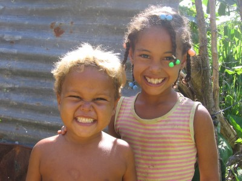And if that don’t make you smile…well there’s not much more Backpacker Acker can do for ya.Until next time.Paz
{kind=link}
{kind=link}
{kind=link}
Two months and counting…
I am starting to finalize the plans for the trip to Latin America (aka escape the snow), as well as saving money for the trip through odd-jobs while not relegating myself to wearing a collared shirt or suit. great success!Since I left you all last, I finished my work at a global food banking consulting firm and was able to get some real self-fulfilling work done. I have connected officials from the country of Bulgaria to their American counterparts in hopes that in the next year or so, a food banking system will arise in Bulgaria. I think if I ever go to Bulgaria, I might get elected Mayor of a podunk town somewhere and live the rest of my days there. Picture Mayor Quimby from the Simpsons in Bulgaria, that’d be me. Speaking of the Simpsons—if you haven’t seen the movie yet, do it. It will make you appreciate the true genius that is the Simpsons, and put those other shows (Family Guy, Futurama) to shame.Other business before I go into a bit of details about the planned trip…I saw Mike Abdenour walking down Michigan Avenue. he was wearing red overalls and throwing goombas. Last week my buddy maze and I rode our bikes from Chicago, Illinois to South Haven, Michigan. Total mileage was around 160 or so and we completed it in 2 days. If you’ve never gotten on a bicycle and done a trip of any length, you’re missing out on a truely genuine way of seeing the United States. Every place we went, friendly people were questioning as to where we were coming from, where we were going, it’s like soon as you leave Chicago you are in a world of Flanderess (i dont know how to make a plural of Ned Flanders). If you are not a Simpsons fan, you might not understand most of this blog, and you might also be boring.The fireman was our support car as needed our bike gear and tent for camping on the first night. Next summer/fall I’d like to pedal from New York City to Seatle, Washington. If you know me, it will happen. Here’s a picture of me and maze and the fireman with the support car. Although this car is not in the best shape, I will be the first to admit. Soooo, we might need a support car for the support car if anyone is interested.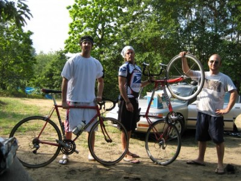Speaking of friendly people, I moved to Chicago right from Maui, Hawaii where people express the ‘Aloha’ spirit. In Chicago, not that much. People in cities are generally more abrasive, rude, and just downright unfriendly. Riding a bicycle in the city as my mode of transportation, it gives you first-hand experience of this anti-altruistic attitude. I’ve come to despise cabs and generally anyone who drives within the city to a place they could walk, or ride, for that matter. Since I’ve told the story quite a few times, I’ll post it on here so everyone can learn a valuable lesson.Two weeks ago I was riding with a buddy downtown, we were moving at a good clip in an attempt to make it to Lollopolooza to see a few bands. My friend, a more-than-capable rider was on my right as went over a cut-out in the pavement. Normally a very simple manuever, however, seconds later, it would turn into a very complicated day. The front wheel of my friend’s beautiful Raleigh cranked off on the pavement and his fork went straight down sending him face-first into the hot concrete. Swingin around and pulling up to my unconcious friend, all i could see was blood and his front wheel frickin cruising down Orleans Avenue. Apparently the wheel REALLY wanted to see the Roots.I kneeled down next to my buddy and he had what doctors would later call “an episode of seizures.” Violently shaking and thrashing on the road, BPA hasn’t been that scared ever since that “impromptu meeting” with Chris Hansen, heh, heh, (kidding). and to my amazement people just kept on driving past us. I’d like to think they wanted to stop, but I guess they had someplace they all had to be. Everyone in the world has someplace to be it seems, even when the welfare of our fellow human beings is at stake. The point is—city life makes people desensitized and if you spend too much time in these rough cities, you too will become oblivious to human suffering going around you. We walk by homeless people with out a second thought. Somewhere along the line this behavior became acceptable. Well, I’ll tell you where it’s not acceptable, St. Joe’s, Michigan, Niles, Michigan, Portage, Indiana, and every other small-town in America.One guy did stop, although he claimed it was because my friend’s bike tire blew a stop sign a half block down, and wanted to lecture us. (that’s a sarcastic joke) One woman did stop and stated she was a cardialogist at a local hospital. We held my friend’s body still while he had the seizures and she reassured him everything would be fine once he regained conciousness. She stayed with us until the ambulance came and made sure the paramedics knew what had happened. She then stood up with my friend’s blood on her hands, wiped them off on a napkin, and got back in her car and drove away. Couldn’t even get to thank her, she didn’t do it for the self-fulfillment, she did it because it was in her human nature. Now all that shit I talk about city folk and here’s a diamond in the rough.So for every 20 cars that drove by, one stopped. I like to think the people I associate with and call my ‘friends’ would be that one as well, and i’d hope that all of you feel the same way. So let’s change this world, let’s not let it become commonplace to ignore our fellow brothers and sisters. whether its the biker unconcious on Orleans Avenue or the African child in a displacement camp, show compassion. one day, you might be that soul in dire need of help and let me tell you, it hurts more and more as each of those 19 cars drive by…let’s all make sure we’d be that one diamond in the rough.My friend has recovered after minor brain bleeding and is riding again…with a helmet. I hate to get philosophical again, but you know it makes it way into nearly every post.So the first week or so of November, I will be moving to Santo Domingo, in the Dominican Republic for several development projects. A few of the projects will focus on bringing water purification systems to various villages in the mountains of the D.R. Another project will help Dominican women sell home-made purses to stores through out the United States. I will post a map with a route of my trip as well in the next week. the computer is saying it won’t let me “because of security reasons” whatever the hell that means. is BPA a security risk? guess so, i kind of thought i was harmless.So my friends, I will update again within a few weeks with a new map and hopefully more details on my work in the D.R.A few books you all should check out that I am reading/have read…”The Immortal Class” Travis Culley—A non-fiction piece about bike messengers in Chicago.”The End of Poverty” Jefferey Sachs”Fortune at the Bottom of the Pyramid” CK PrahaladMay you all have a peaceful week and an altruistic future…From the couches of my comrades in this intimidating urban jungle,Backpacker Acker
Last week my buddy maze and I rode our bikes from Chicago, Illinois to South Haven, Michigan. Total mileage was around 160 or so and we completed it in 2 days. If you’ve never gotten on a bicycle and done a trip of any length, you’re missing out on a truely genuine way of seeing the United States. Every place we went, friendly people were questioning as to where we were coming from, where we were going, it’s like soon as you leave Chicago you are in a world of Flanderess (i dont know how to make a plural of Ned Flanders). If you are not a Simpsons fan, you might not understand most of this blog, and you might also be boring.The fireman was our support car as needed our bike gear and tent for camping on the first night. Next summer/fall I’d like to pedal from New York City to Seatle, Washington. If you know me, it will happen. Here’s a picture of me and maze and the fireman with the support car. Although this car is not in the best shape, I will be the first to admit. Soooo, we might need a support car for the support car if anyone is interested.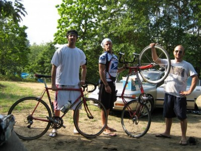Speaking of friendly people, I moved to Chicago right from Maui, Hawaii where people express the ‘Aloha’ spirit. In Chicago, not that much. People in cities are generally more abrasive, rude, and just downright unfriendly. Riding a bicycle in the city as my mode of transportation, it gives you first-hand experience of this anti-altruistic attitude. I’ve come to despise cabs and generally anyone who drives within the city to a place they could walk, or ride, for that matter. Since I’ve told the story quite a few times, I’ll post it on here so everyone can learn a valuable lesson.Two weeks ago I was riding with a buddy downtown, we were moving at a good clip in an attempt to make it to Lollopolooza to see a few bands. My friend, a more-than-capable rider was on my right as went over a cut-out in the pavement. Normally a very simple manuever, however, seconds later, it would turn into a very complicated day. The front wheel of my friend’s beautiful Raleigh cranked off on the pavement and his fork went straight down sending him face-first into the hot concrete. Swingin around and pulling up to my unconcious friend, all i could see was blood and his front wheel frickin cruising down Orleans Avenue. Apparently the wheel REALLY wanted to see the Roots.I kneeled down next to my buddy and he had what doctors would later call “an episode of seizures.” Violently shaking and thrashing on the road, BPA hasn’t been that scared ever since that “impromptu meeting” with Chris Hansen, heh, heh, (kidding). and to my amazement people just kept on driving past us. I’d like to think they wanted to stop, but I guess they had someplace they all had to be. Everyone in the world has someplace to be it seems, even when the welfare of our fellow human beings is at stake. The point is—city life makes people desensitized and if you spend too much time in these rough cities, you too will become oblivious to human suffering going around you. We walk by homeless people with out a second thought. Somewhere along the line this behavior became acceptable. Well, I’ll tell you where it’s not acceptable, St. Joe’s, Michigan, Niles, Michigan, Portage, Indiana, and every other small-town in America.One guy did stop, although he claimed it was because my friend’s bike tire blew a stop sign a half block down, and wanted to lecture us. (that’s a sarcastic joke) One woman did stop and stated she was a cardialogist at a local hospital. We held my friend’s body still while he had the seizures and she reassured him everything would be fine once he regained conciousness. She stayed with us until the ambulance came and made sure the paramedics knew what had happened. She then stood up with my friend’s blood on her hands, wiped them off on a napkin, and got back in her car and drove away. Couldn’t even get to thank her, she didn’t do it for the self-fulfillment, she did it because it was in her human nature. Now all that shit I talk about city folk and here’s a diamond in the rough.So for every 20 cars that drove by, one stopped. I like to think the people I associate with and call my ‘friends’ would be that one as well, and i’d hope that all of you feel the same way. So let’s change this world, let’s not let it become commonplace to ignore our fellow brothers and sisters. whether its the biker unconcious on Orleans Avenue or the African child in a displacement camp, show compassion. one day, you might be that soul in dire need of help and let me tell you, it hurts more and more as each of those 19 cars drive by…let’s all make sure we’d be that one diamond in the rough.My friend has recovered after minor brain bleeding and is riding again…with a helmet. I hate to get philosophical again, but you know it makes it way into nearly every post.So the first week or so of November, I will be moving to Santo Domingo, in the Dominican Republic for several development projects. A few of the projects will focus on bringing water purification systems to various villages in the mountains of the D.R. Another project will help Dominican women sell home-made purses to stores through out the United States. I will post a map with a route of my trip as well in the next week. the computer is saying it won’t let me “because of security reasons” whatever the hell that means. is BPA a security risk? guess so, i kind of thought i was harmless.So my friends, I will update again within a few weeks with a new map and hopefully more details on my work in the D.R.A few books you all should check out that I am reading/have read…”The Immortal Class” Travis Culley—A non-fiction piece about bike messengers in Chicago.”The End of Poverty” Jefferey Sachs”Fortune at the Bottom of the Pyramid” CK PrahaladMay you all have a peaceful week and an altruistic future…From the couches of my comrades in this intimidating urban jungle,Backpacker Acker
{kind=link}
{kind=link}
The conclusion of the Mexican Journey
Well, its been a long damn time since i’ve updated this thing…school is finally over for the semester and i finally have some much anticipated free time. lucky you guys. ive heard reports of people going through BPA withdrawl, and i deeply apologize.Before BPA forgets—The map for BPA’s Goodwill Tour 2007 will be unveiled next week. Check back on the site, now that I have more free-time many more posts to come.on a side note-this site is running slower than my grandpa doing 40 on the local freeway, maybe its the traffic on the site? hahahaohoh, good one. if this site can’t handle the 2-3 people im getting per week, imagine when BPA blows up? You all know it will happen one day, and just remember I wont remember the little people when I make it big.After my classmates arrived, they found me face down outside the hostel in a puddle with empty corona bottles at my feet. (gross exageration, and by gross i mean very, and by exageration i mean truth)The next day we went to Zakapatan, a local Mayan community. Here is a picture…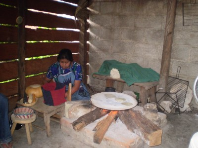This is a local Mayan woman’s hut where she was making tortillas, it was excellent and the kick of the event was when one of my vegetarian classmates realized she was eating chicken, (i can understand why, this stuff in no way resembled chicken). All the food the Mayans eat is 100% natural, no pesticides, no hormones, nothing. They don’t accept food aid from the United States because our food is so genetically modified.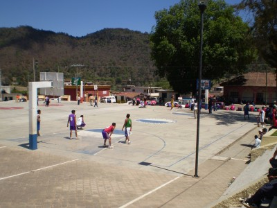Some authentic mexican ballers…(court sponsored by Coca-cola—they have to hike up mountains to get water, yet coca-cola has the audacity to advertise in their town, and somehow coca-cola can find ways to bring in soda, but the government can’t figure out how to get them adequate drinking water, this should make you angry)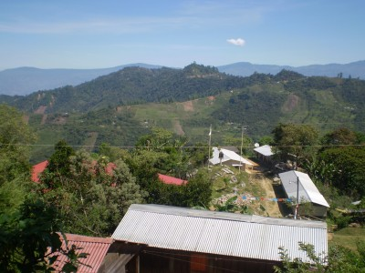This is “Acteal.” Feel free to look up more extensive information about this site, but I will give you a brief run-down of the events. In 1996, para-military (civilians outfitted with weapons and support from the government) attacked this peaceful village and murdered 45 women, children, and men. The church is in the back by a large cliff. They were attacked using heavy machine gun fire and were un-armed.Upon entering the church, beams of light shine through the now-abandoned church. Its eerily silent and upon closer examination the dime-size rays of light are shining through dozens of bullet-holes riddled through out the church. In the front of the town they have a memorial for the victims. pictures are posted with a small caption about each member. The man giving the tour’s father, mother, two sisters, and three cousins were all murdered that day. it was one of the more emotional places I have ever been. These people are so spiritual, it is almost contagious. The tranquility of the area, no cars, no electricity, just rugged mountains and friendly people brought me to a spiritual place inside myself i’ve only been a few times in my life. i wish you all could experience a moment like that at least once in all of your lives.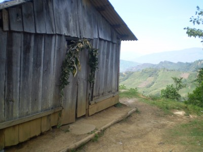Another view of the church. Two local guards at a local autonomous community we went to. These are authentic Zapatistas who live in communities 100% autonomous from the Mexican government.
Two local guards at a local autonomous community we went to. These are authentic Zapatistas who live in communities 100% autonomous from the Mexican government. One of the classrooms in the zapatista community, hopefully i will be back there soon (more later) if you can read spanish, read the poem behind.i’ve played ball with gangstas in brooklyn, mini-toni kukoc’s in croatia, kids in israel, and rastafaris in the dominican republic, but we played ball with 4 kids from the zapatista community, and it might have been the best basketball experience ive ever had. here’s their backboard…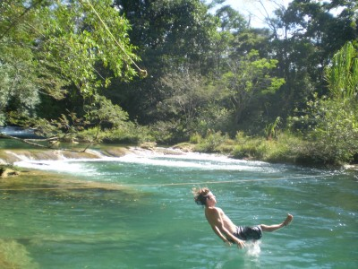me jumping off a rope into my natural home, the water.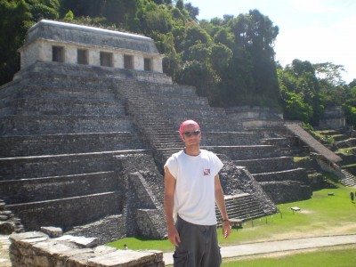This is Palenque. ancient mayan ruins. it was 100 or so degrees that day…Disclaimer—If you dont like hearing me lecture about life, which I do almost every entry, you can stop reading now…I feel as though I owe this site a final thought for this trip…so here it goes…When I first left for Mexico, I was nervous, as I am a bit before almost every trip I have ever gone on. It’s a good nervousness though, if you are traveling and you aren’t nervous somewhat, A) you are either coked up B) You aren’t going someplace worthy or daring enough. If another friend tells me, they were nervous before their trip to Ft. Lauderdale, BPA may close down the site.The thing about Mexico is, it’s not Africa, and I mean that geographically, which almost makes it worse that we aren’t taking care of our fellow “Americans.” We aren’t talking about delivering medical supplies across the Atlantic on a 20 hour plane ride, we are talking about a 4 hour plane ride from Chicago to areas that need supplies in order to survive. Logistically speaking, it’s a disgrace we aren’t taking care of our neighbors to the South.Perspective. It’s a word that is tossed around too much with out people realizing the significance in it. Traveling gives a person perspective. It makes you realize that although you may have had one bad day, it pales in comparison to the bad day the Mayan farmer had. You had to walk through rain from your subway stop to your cubicle, the Mayan farmer had to walk 10 miles up a mountain to sell his coffee so that we could have our Starbucks fix in the morning, and he makes a whopping 200 dollars a year for his effort. A year, that’s not a mis-print. I write this in hopes that the next time something doesn’t go exactly like you planned in each of your lives, step back, and realize it could be extremely worse. I think about Manuel, the man who lost his entire family to para-military and become embarassed with myself for cursing out a late subway train. This sense of humility is good for each and every person to experience.Traveling also opens your eyes to the truth. I was simply blown away by some of the poverty I saw in Southern Mexico. Children beg for money, children shine shoes for 5 pesos (50 cents). The way the Mexican government treats the indigenous of Mexico really hits you hard.This is Mexico, our neighbor, our brother, with the richest nation in the world situated right to the north, it shouldn’t be like this. We shouldn’t allow it to be like this.The trip to Mexico re-ignited my hopefully life-long quest to serve the poor, hungry, and sick of the world. Riding through the streets of Chicago on my bike every morning, I have grown disillusioned by the cabs flicking me off, business suits heading to their high-rise office firms, and police officers arguing with motorists about parking tickets. I used to flick the cabs off right back, swear at pedestrians jay-walking in front of my bike, but not after Mexico. I realized the whole world doesn’t act this way, and just because 6 million people in one city do, doesn’t make it just, or the global norm.People in Mexico, (D.F. as well as Southern) greet each other with ‘hola’ or ‘buenos dias’ every day. People refer to one another as ‘hermano’ y ‘hermana’ (brothers and sisters) regardless of where their family hails from or which tribe they originate from. Where did we lose our way with this comraderie?All is not lost. I met hundreds of people from around the world, dedicating their entire lives to serving the world’s poor. Gretchen, who works for a non-profit helping to promote Mayan women’s rights moved from Berlin, Germany to Chiapas 15 years ago, and hasn’t been back to Germany since. I met Raul, a human rights lawyer from Madrid, who now works along the Guatemala border documentating human rights abuse cases for Guatemalan refugees. Meeting these type of people lets you know that there are still people out there that truely do care, and they’ve devoted their lives to it.My hopes for you my loyal readers are to browse through this website, read my stories, look at my pictures, survive my lectures, and realize we are all here on this earth for one lifetime. What will you do with yours? If after deep self-examination, you are happy with what you have done in your life and for others, I commend you. If you are not happy, you have the power to change that. I write this not in judgement of anyone. It’s just it pains me to hear of people miserable in their jobs and afraid to take the “leap” and see what’s really out there. Gretchen took the leap, so did Raul.So I will return to Mexico one day, it’s a spiritual, magical place. The weather is warm and the people are even warmer. my friends, this ends my Mexican journey, I hope the stories entertained and also informed. One day in the future, you all will be somewhere that will truely inspire you, maybe Mexico, maybe India, maybe Toledo, Ohio. Wherever that place is, embrace it, and let it change you, and while you are embracing, scan the local bar, somewhere out there is another ‘Backpacker Acker’ and he wants a beer, desperately.From the concrete jungle on my steel two wheeler,Backpacker Acker
One of the classrooms in the zapatista community, hopefully i will be back there soon (more later) if you can read spanish, read the poem behind.i’ve played ball with gangstas in brooklyn, mini-toni kukoc’s in croatia, kids in israel, and rastafaris in the dominican republic, but we played ball with 4 kids from the zapatista community, and it might have been the best basketball experience ive ever had. here’s their backboard…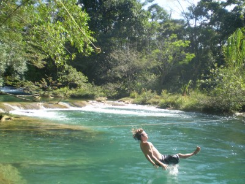me jumping off a rope into my natural home, the water.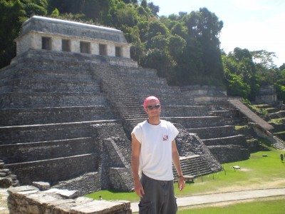This is Palenque. ancient mayan ruins. it was 100 or so degrees that day…Disclaimer—If you dont like hearing me lecture about life, which I do almost every entry, you can stop reading now…I feel as though I owe this site a final thought for this trip…so here it goes…When I first left for Mexico, I was nervous, as I am a bit before almost every trip I have ever gone on. It’s a good nervousness though, if you are traveling and you aren’t nervous somewhat, A) you are either coked up B) You aren’t going someplace worthy or daring enough. If another friend tells me, they were nervous before their trip to Ft. Lauderdale, BPA may close down the site.The thing about Mexico is, it’s not Africa, and I mean that geographically, which almost makes it worse that we aren’t taking care of our fellow “Americans.” We aren’t talking about delivering medical supplies across the Atlantic on a 20 hour plane ride, we are talking about a 4 hour plane ride from Chicago to areas that need supplies in order to survive. Logistically speaking, it’s a disgrace we aren’t taking care of our neighbors to the South.Perspective. It’s a word that is tossed around too much with out people realizing the significance in it. Traveling gives a person perspective. It makes you realize that although you may have had one bad day, it pales in comparison to the bad day the Mayan farmer had. You had to walk through rain from your subway stop to your cubicle, the Mayan farmer had to walk 10 miles up a mountain to sell his coffee so that we could have our Starbucks fix in the morning, and he makes a whopping 200 dollars a year for his effort. A year, that’s not a mis-print. I write this in hopes that the next time something doesn’t go exactly like you planned in each of your lives, step back, and realize it could be extremely worse. I think about Manuel, the man who lost his entire family to para-military and become embarassed with myself for cursing out a late subway train. This sense of humility is good for each and every person to experience.Traveling also opens your eyes to the truth. I was simply blown away by some of the poverty I saw in Southern Mexico. Children beg for money, children shine shoes for 5 pesos (50 cents). The way the Mexican government treats the indigenous of Mexico really hits you hard.This is Mexico, our neighbor, our brother, with the richest nation in the world situated right to the north, it shouldn’t be like this. We shouldn’t allow it to be like this.The trip to Mexico re-ignited my hopefully life-long quest to serve the poor, hungry, and sick of the world. Riding through the streets of Chicago on my bike every morning, I have grown disillusioned by the cabs flicking me off, business suits heading to their high-rise office firms, and police officers arguing with motorists about parking tickets. I used to flick the cabs off right back, swear at pedestrians jay-walking in front of my bike, but not after Mexico. I realized the whole world doesn’t act this way, and just because 6 million people in one city do, doesn’t make it just, or the global norm.People in Mexico, (D.F. as well as Southern) greet each other with ‘hola’ or ‘buenos dias’ every day. People refer to one another as ‘hermano’ y ‘hermana’ (brothers and sisters) regardless of where their family hails from or which tribe they originate from. Where did we lose our way with this comraderie?All is not lost. I met hundreds of people from around the world, dedicating their entire lives to serving the world’s poor. Gretchen, who works for a non-profit helping to promote Mayan women’s rights moved from Berlin, Germany to Chiapas 15 years ago, and hasn’t been back to Germany since. I met Raul, a human rights lawyer from Madrid, who now works along the Guatemala border documentating human rights abuse cases for Guatemalan refugees. Meeting these type of people lets you know that there are still people out there that truely do care, and they’ve devoted their lives to it.My hopes for you my loyal readers are to browse through this website, read my stories, look at my pictures, survive my lectures, and realize we are all here on this earth for one lifetime. What will you do with yours? If after deep self-examination, you are happy with what you have done in your life and for others, I commend you. If you are not happy, you have the power to change that. I write this not in judgement of anyone. It’s just it pains me to hear of people miserable in their jobs and afraid to take the “leap” and see what’s really out there. Gretchen took the leap, so did Raul.So I will return to Mexico one day, it’s a spiritual, magical place. The weather is warm and the people are even warmer. my friends, this ends my Mexican journey, I hope the stories entertained and also informed. One day in the future, you all will be somewhere that will truely inspire you, maybe Mexico, maybe India, maybe Toledo, Ohio. Wherever that place is, embrace it, and let it change you, and while you are embracing, scan the local bar, somewhere out there is another ‘Backpacker Acker’ and he wants a beer, desperately.From the concrete jungle on my steel two wheeler,Backpacker Acker
{kind=link}
{kind=link}
{kind=link}
{kind=link}
{kind=link}
{kind=link}
{kind=link}
Mexico Wrap-Up Coming this week…
BPA would like to send out his prayers to the victims of VT.i’m back in Chicago, Illinois…where we are currently hovering around 35 degress…on april 18th…and you wonder why i like to travel?this week i will do the mexico final post which is still in the editing phase. every post requires thought and searching ones soul for what one really wants to say…so that all 3 people who read this can be inspired by BPAcheck back this week if you want to be inspired…or have absolutely nothing else to do.
crazy dudes, crazy places
preface-as you can maybe see from the pictures, i still dont know what im doing. hopefully I, or my buddy will be able to make these pictures a bit smaller, on the bright side, at least any senior citizens reading this can see em.March 24, 2007===I write this entry to my loyal readers from 8,000 feet above sea level, where as you might imagine, one beer feels like nine, no really, dont worry, this shouldn’t get out of hand…I am in the town of San Cristobal de las Casas, one of the most beautiful towns I have ever been to. I wish the computers here werent running on flintstone time and i could upload some pictures for the site, but i guess pictures will have to wait until i get back to the States.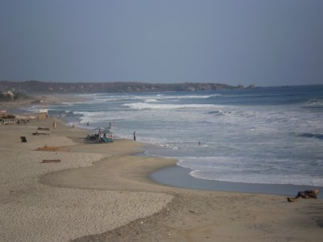all be damned, i think i just uploaded a picture, the crazy thing is I hit the upload thing maybe 15 minutes ago and I think it just did it. anyway if it worked, its a picture of the best surfing beach in all of mexico. if it didn’t work, its a picture of me bench pressing 500 lbs, while drinking two beers and surfing a 90 foot wave. wow, i guess you guys have no way of proving it DIDNT happen huhi actually may have just figured out how to post pictures, this is a small miracle people, really it is. thats cause for another beer! dont you all agree?I think I left off last waiting for a bus from Puerto escondido to san cristobal de las casas. i hiked it up to the bus station on top of this massive hill, me being a moron, decided i should hike it up because that will make me tired and more likely to sleep on the bus. bad idea. i nearly killed myself and taxis were honking at me the entire time, as if to say “come on gringo, you know you cant do it, get in my fast cab, we zoom to top of hill in no time”i finally reached the station and got in line for a ticket, these stations are run down, beat up, bugs everywhere-type stations with a static tv that some guy is watching mexico’s version of jerry springer, so a sweet place. the man in front of me was arguing with some ticket lady about how he needs to get to guatemala city by saturday morning or he’s “dpne.” He spoke zero english and constantly asked me for help, saying stuff like, “could you tell this lady how to work her computer in spanish” so im going to help some white dude berate a native, because hes an idiot? nah, hes on his own, he finally pays and leaves in a huff. i buy my ticket, 22 us dollars for a 14 hour ride.entering the bus i see he is on the bus as well, we are going to different cities but he is connecting with us. i already know whats going to happen before it happens. i look down on my ticket, and hes in seat 3 and lucky me in seat 4. now ive met some weird, strange, crazy people in my travels, ari and i once met a guy, 60 or so, in southern croatia who carried a backpack the size a kindergarten kid might carry. we asked him where he was from and he stated with the heaviest russian accent possible, “massachusetts” if that guy was from mass. then im from tanzania. we then asked him where his backpack was he said that was it. we asked him how long he had been traveling for and he stated two years. so crazy boris was number 1 and we have a new number 2…JOHN H. from vancouver.wearing a hawaiian shirt with pure white hair, the entire first two hours of the bus ride he talked about “playing ball” he must have mentioned staying in the game probably 8 times at least. at first i thought he might have been a baseball player, no way. eventually i worked some info out of him, every year he has to go back to canada so the government can “check up on him” he stated he was getting a pension, so i thought maybe he was a govt. worker, he told me he gets a pension from the government for a crime he comitted. is this friggin possible? does the canadian government pay people to committ crimes there? i have some research to do because he said it with the most straight face possible, and i truely believed him.he was harmless, but crazy. and theres no way in hell he’s making it to guatemala city, he is going to get on the wrong bus and end up right back in escondido, i know this.the movie on the bus was terrible and in spanish, so double dinger. it was so low-budget, the chase scenes involved some creepy old guy running after some girl through istanbul. have you been to istanbul? you can buy a car there for 50 bucks. this movie director just decided foot chases were the new “fad” and the movie sucked for it. the second movie was shaggy dog, horrible. the third movie was some space movie with dax shepperd and some kids, basically jumangi in space. do i really have to tell you what i thought of this one as well?i handed my camera to this old mexican man, maybe 60, he picked it up and brought it to his face looking through the extended lens. i showed him which side to look through and as you can see, pure art. he was a real nice guy though. the last night in escondido, i went to a bar on a beach and watched the last king of scotland on a bed sheet tied between two palm trees with people from all over the world, sipping beers, talking about life and watching a pretty cool movie, i thought. theres moments when you are traveling, where you just realize this is what lifes about and this was one of many ive had the past week.i couldnt sleep one damn hour on that bus because of that guy and then because i have no idea. i stumbled into this hostel at 6am and begged the woman to let me in and give me a bed for 4 hours of sleep. she obliged and i was out for the next four hours. after waking, i just cruised aimlessly around san cristobal exploring every street i could, sometimes when you travel, its amazing to just walk around and get lost.the mayans here are beautiful, just beautiful faces, they believe taking a picture is part of their soul leaving their body, so im going to lay off the photos, although i wish you guys could see their beauty. for those who have seen nacho libre with jack black, this is partly where it takes place, there was a concert in the square last night and some teenagers were playing rock music and wearing the masks from that movie that the wrestlers wear, for those who havent seen the movie, you just wasted 15 seconds reading this sentence.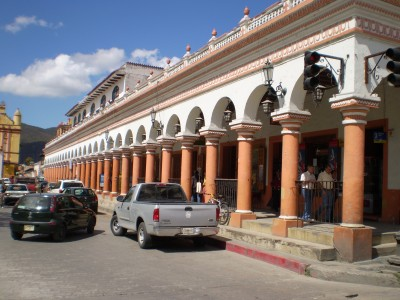everyone here has guns it seems, its a lot like israel in that way, the guards who drive the armored cars come out and load their shotguns and then just stand there like they are about to be taken down and ready for battle, a big change from the chris farley look-alikes who do the guard service at your local chase bank.it actually gets very cold in san cristobal at night. last night i went to a bar called “revolucion” what better place to go to a revolution bar in a town where an actual revolution took place? talked with two aussies who were en route from los angeles all the way down to the tip of chile, cool cool people who gave excellent advice seeing as thats the trip i want to take in october. they have traveled everywhere, and aussies do that. they dont have the pressure that US young people have of getting a job right after college, you can work from 30-60 and thats thirty years of work! why work 40? its that simple. the united states is un-real sometimes. but you all know i could lecture on this for hours.in the revolucion bar, ended up hanging with a german going to work on a yacht in spain next month, a bolivian who opened a hostel in san cristobal and a mexican dude just traveling his home country. these are the types of people you meet when you travel. and if i see the german again tonight, theres a good chance from his persuasive skills, i might end up on a yacht in the mediterranean next year.i went on a canyon tour today, met some more cool people, heres a picture. then i must wrap this thing up.
the last night in escondido, i went to a bar on a beach and watched the last king of scotland on a bed sheet tied between two palm trees with people from all over the world, sipping beers, talking about life and watching a pretty cool movie, i thought. theres moments when you are traveling, where you just realize this is what lifes about and this was one of many ive had the past week.i couldnt sleep one damn hour on that bus because of that guy and then because i have no idea. i stumbled into this hostel at 6am and begged the woman to let me in and give me a bed for 4 hours of sleep. she obliged and i was out for the next four hours. after waking, i just cruised aimlessly around san cristobal exploring every street i could, sometimes when you travel, its amazing to just walk around and get lost.the mayans here are beautiful, just beautiful faces, they believe taking a picture is part of their soul leaving their body, so im going to lay off the photos, although i wish you guys could see their beauty. for those who have seen nacho libre with jack black, this is partly where it takes place, there was a concert in the square last night and some teenagers were playing rock music and wearing the masks from that movie that the wrestlers wear, for those who havent seen the movie, you just wasted 15 seconds reading this sentence.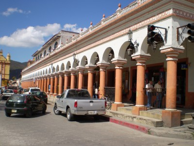everyone here has guns it seems, its a lot like israel in that way, the guards who drive the armored cars come out and load their shotguns and then just stand there like they are about to be taken down and ready for battle, a big change from the chris farley look-alikes who do the guard service at your local chase bank.it actually gets very cold in san cristobal at night. last night i went to a bar called “revolucion” what better place to go to a revolution bar in a town where an actual revolution took place? talked with two aussies who were en route from los angeles all the way down to the tip of chile, cool cool people who gave excellent advice seeing as thats the trip i want to take in october. they have traveled everywhere, and aussies do that. they dont have the pressure that US young people have of getting a job right after college, you can work from 30-60 and thats thirty years of work! why work 40? its that simple. the united states is un-real sometimes. but you all know i could lecture on this for hours.in the revolucion bar, ended up hanging with a german going to work on a yacht in spain next month, a bolivian who opened a hostel in san cristobal and a mexican dude just traveling his home country. these are the types of people you meet when you travel. and if i see the german again tonight, theres a good chance from his persuasive skills, i might end up on a yacht in the mediterranean next year.i went on a canyon tour today, met some more cool people, heres a picture. then i must wrap this thing up. there were rumors last night that sub-commodante marcos, the leader of the revolution, who hasnt been seen publicly in a while might come to san cristobal for the first time in years tomorrow…if this happens, i cant really explain the significance, im on this trip because of what he started, to see him, in person, un-real. i wont get my hopes up, the sources were a drunk guy from holland and a waitress. but they are significant rumors.sorry to get so philosophical, traveling does that. its an addiction, and im hooked like an ice-head in a “Dog the bounty hunter’s” episode…check that show out. its one of the few tv shows i watch.i just dropped my camera and caught it mid-air, and on that note…i will write again in 4 or 5 days.from a sandy rooftop, high in the mountains of latin america…backpacker acker
there were rumors last night that sub-commodante marcos, the leader of the revolution, who hasnt been seen publicly in a while might come to san cristobal for the first time in years tomorrow…if this happens, i cant really explain the significance, im on this trip because of what he started, to see him, in person, un-real. i wont get my hopes up, the sources were a drunk guy from holland and a waitress. but they are significant rumors.sorry to get so philosophical, traveling does that. its an addiction, and im hooked like an ice-head in a “Dog the bounty hunter’s” episode…check that show out. its one of the few tv shows i watch.i just dropped my camera and caught it mid-air, and on that note…i will write again in 4 or 5 days.from a sandy rooftop, high in the mountains of latin america…backpacker acker
{kind=link}
{kind=link}
waiting for a bus…
Im waiting for a bus right now that is going to take me 14 hours down the coast to the city of san cristobal de las casas, google it if you feel so desired, im too hot to look up a map for ya bums. ive never been on a bus for 14 hours straight before. thats all i can really say.i will update this thing on saturday, after i do some more righteous things.nothin but peace and love,backpacker acker
Biting Ants-1 Backpacker Acker-0
March 20, 2007-Im in puerto escondido, and this keyboard is all funky so get used to the grammatical and capitalization errors, pretend im george bush or something.for anyone who would like to travel for free, buy a ticket on the chicago to dallas flight at the earliest possible time, usually about 6am…according my sources these flights are 100 percent overbooked and every monday they ask for people willing to bounce their ticket for a 300 dollar voucher…you do the math. the ticket is only around 200-300 so if you do enough, eventually you are flying for free…besides the fact that you have to actually go to texas. that sucks.anyway, i took this flight and decided not to bounce myself which i normally always do and got to dallas 2 hours later…2 hours later than that i was in mexico city. i had my own row on the flight to mexico city and mexico city is by far the biggest city i have ever seen from the air, it goes on for miles and miles and i have some pictures that show this…my friend told me that i would be able to plug my camera into the computers here and upload photos–apparently he hasnt seen the computers here…this thing has got to be 10 years old at least…in fact i may have a son somewhere older than this bugger. its a joke. relax.ok onto this trip thing—its frickin 92 degrees right now and its 10pm at night, let me just start this entry by saying the coronas and modelos *(beers( are 1.10 american dollars…so lets just say its been a good few days…but please excuse my lack of creativity because the heat is intense and there is a loud american sitting right next to me reading an email aloud to his wife who cant read the screen…gootta love that stuff. does anyone want to know why timothy didnt go to dinner saturday night? tune into my next blog and ill release the juice details.i just bought another corona for 10 pesos…thats exactly a dollar, the cheapest ive found. no tipping either required at an internet cafe\!ive got a lot to say, but no patience to say it, so lets see how this turns out…first let me say i hope its snowing and 22 degrees in chicago.mexico is a crazy country, they are very slow-paced and not very organized…that might explain why i dig it so much. mexico customs felt like the security guards hired at your high school to watch over lunch period, you know they are there, but they wont do squat. i passed through easily and the customs agent told me to “push the red button”—when does ‘push the red button’ ever sound like a positive thing? ‘mam you just had a baby boy its healthy! push the frickin red button!so i push the damn red button and i already feel like im going down, for what i have no idea but i push the red button and stand there waiting for miguel from customs to swipe me away and re-enact maria full of grace…i push that bloody red button and nothing happens…until the lady at customs tells me to walk through…ok so you push the red button and a door opens that lets you out of the airport.i just didnt see the automatic door open…couldnt they have made it a green button? or maybe a button with a smiley face that says, ‘you made it through mexican customs, congratulations’…i think the red button was a bad idea. how many people who actually had drugs in their bags heard ‘push the red button’ and just instictively starting swallowing unknown quanitites of drugs? over 1000? i think so.this is going to be a long entry because i just ordered another one…if i were you i’d print it up and read it on the john.my next part was the flight from mexico city to puerto escondido…this place was maybe as old as this computer…the reading light buttons you would press and 3-4 seconds later they would turn on. whichever, i made it in one piece. i took a taxi to the backpacker hostel and it cost me 15 pesos…12 pesos=1 american dollar for reference…the hostel im staying at is one block from the beach and costs 150 pesos a night…very cheap…now for 15 bucks a night i cant complain one bit—although i am waging a battle with the biting ants at this place…and so far as you can tell from the title of this entry, im losing.these little buggers are coming in through every crevice in the window, so as a counter-attack i laced the cracks with bug spray and paper towel…ill report back later and tell you if it worked. and most ants you can crush with your feet, but these dudes fly! and when its 92 degrees in your room with no AC the last thing on earth you want to do is chase flying ants.puerto escondido is a small surfing town with no mcdonalds, burger king or any other globalized corporation…small restaurants, bars, shops…a really sweet place…there are hardly any people from the US here, and very very few people speak english at all…its been good for practicing my spanish, although it took me 20 minutes to find an atm that ended up being 40 feet from my hostel.i named my key for my hostel, ‘donde’ or spanish for ‘where’ as in where is that friggin key. i lose this thing every place i go, the beach, the bar, the restaurant, and wait till you see the picture of this stupid key chain, its a tropical fish and it just smiles at me, smiling and smiling like its trying to mess with me. anyway i have a picture and when you see this manical thing, you too will be haunted.here is a typical conversation of the local mexicans and myself…mexicano: hola como estasbackpacker: bein y tu(translated to english for bpa readers\mexicano: do you want to go fishing? big fish! many times!backpacker: no thank you.mexicano: (shows backpacker acker a photo book of alll the fish he has caught)backpacker: they look delicious but no thank you, im out of money.mexicano: do you want some cocaine?backpacker: what? no.i dont know, id say thats a pretty big leap, from do you want to go fishing to do you want some cocaine? where was the intermediary step? i just thought it was bit odd. but i guess that stuff is big here, not my cup of tea, or bottle of coke, badda buh (pig playing drum)so right now its about 11pm here…and i have to administer ‘the test.’ ‘the test’ is when i return to my room to see if it is cool enough to actually fall asleep in, if its not then i go out and have another beer. this way its a win=win situation…either i get to sleep or i have another beer! i know every guy right now is nodding in agreement hopefully.my fan, that hangs over my bed shakes so violentally when its on that i feel like my second circumstision is coming any minute…theres literally hundreds of stray dogs here, and i cant figure out for the life of me if when they are laying down on the street if they are dead or just in a really deep sleep. some are ocean strays who just stay by the beach and swim in the waves, others by the streets.the police ride around in beat up ford rangers two in the cab, and four in the bed…two in the bed carry giant shotguns while the other two have M-16’s mexico sweet aint it?i was eating breakfast in a restaurant by the beach when a fishing boat pulled up, a small boat, with three guys on board and they started unloading these giant fish…i finished my breakfast, paid, and headed down to see what was going on as a crowd was gathering of locals…these dudes pulled out 3 mako sharks…one was bigger than me so over 6ft probably closer to 7 feet….just giants…they cut off their fins, and their jaws and hiked em up to the shore to be sold and processed…craziest thing i have seen in a while…i had no camera on me, and i told the man i needed proof i saw this and he gave me a shark tooth from one of the sharks…it was tiny and i lost it. i placed it in my surf shorts and went swimming and got tossed around in the waves and adios shark tooth.the waves are ridiculous—-some of the sets are a good 8 to 11 feet…monsters…some of the sets are surfable, at least for me…but its those monster sets im worried about…i debated with myself for over an hour today whether i should just do it, but every surfer says those monsters will cripple..so im going to hold out and find a different beach to surf. much to the delight of bpa fans everyhwhere!well its too hot in this cafe…im heading towards san cristobal, in the south of mexico thursday on a mini two day road trip….ill try and post around then…comments are welcome, unless they are profane, then ill become castro and censor it.special thanks to backpacker acker’s father who called 6 hours before my flight to tell me ‘malaria is up in oaxaca’…..thanks to my friend jozey…he has pretty much set up my new design of the site for me, and i will have a full-shout out to him when i get home for anyone who would like to hire his services…hes a good guy.from a picturesque town in southern mexico,backpacker acker
Observations from a moving bus…
March 16, 2007—–In two days I leave for the heart of America, not Kansas but Chiapas, Mexico. Che Guevara went on a journey through the Americas and I look at this as my precursor for my trip through the ‘real America’ next fall. People from the United States often fail to realize that the farmer living in Peru or the Canadian living in Saskatchewan are just as much ‘American’ as the guy drinking Budweiser at a Nascar Race in Alabama is. Now, most guys at NASCAR think Saskatchewan is in Russia or a village comprised of mostly big foots, but regardless, don’t forget America means all of America not just North America or South America or Central America. So think about that next time someone asks you where you are from and you answer with “America” On a side note- IF there are any NASCAR fans who want to travel with me on a trip, I want to write about you. (this is very much not a joke)I fly out from Chicago at 6:00am on Monday morning, that’s a 3:30 am departure time from my apartment. When I have to get up that early, I usually don’t sleep the previous night so we will see. I fly from Chicago to Dallas then onto Mexico City where I will get on a small charter prop plane and fly to Puerto Escondido on the coast of Oaxaca, a western State in Mexico. For those of you who know me, know I don’t really like flying, especially on small planes that could double as crop-dusters. In my opinion, anytime you can sit in the first row of the plane and lean forward and tell the pilot a joke with out yelling, that’s not big enough a plane for me. As long as we aren’t mistaken for drug runners in this plane and the propellers don’t stop spinning, it should be clear sailing.Puerto Escondido is a small surfing town on the Pacific Coast. Zicatela is the name of the best break in Mexico, must too heavy for me, pros have been paralyzed there by the shallow reef and hollow waves, so I’ll watch and settle for some breaks a few beaches away. Im staying in a local backpacker hostel a few hundred meters from the beach, it looks beautiful and like a good time, but I will report on that later. For 6 dollars American a night, I cant complain at all. Ive been through Pacific Islands, (Cook Islands, Tahiti) and bed bugs were my concern there, I wont go into detail about them, but those who have traveled and know them well, know they are terrible. That is on my only concern in southern mexico.From Puerto Escondido, I will take a bus along the coast south to the Guatemala border where we will cut up and head to San Cristobal de las Casas, for those who want to follow via map somewhere. The bus ride will be 14 hours so I will have my ipod and quite a few books. I hope to meet some crazy Mexican people and share some good stories on the website later on this trip. In San Cristobal, I will join my comrades from DePaul and we will be in San Cristobal for 11 days studying the Zapatista community which Ive explained a bit in previous editions of BPA.Right now, Im on a train from Detroit, Michigan to Chicago, Illinois after returning home to gear up for the trip with my backpack. Im not sure what the name of this train is but they might as well call it the “Chotchy Express” For those who don’t know—chotchy is a term invented (by whom is disputed)…the reason I know it was recently invented is because when Im typing it in right now, Microsoft word is telling me it doesn’t exist. Anywho, chotchies (plural) are basically the male equivalent of a JAP, or jewish American princess….The classic sign of a chotchy is massive amounts of hair gel usually accompanied by a button-down t-shirt, can usually be heard saying stuff like…well here might be a typical chotchy conversation.(names are purely random, don’t email me)Jeremy- “dude, do you think I should only button the bottom three buttons tonight?”Tim- “are my sleeves rolled up high enough, ive been working out.”Jeremy- “yeah dude, you look good, when we get to the bar, can we all stand in a circle and talk about which girls we’d like to hook up with?”Tim- “yeah, I feel like my sleeves keep rolling down, are you sure they are rolled up enough?”Jeremy- “yeah, don’t worry, when we are waiting in line at the bar for 6 hours tonight, Im going to mack on the girl in the front of me whether she likes it or not, and its 22 degrees outside, screw a jacket”Tim- “I have to change shirts”(this train sucks, I could seriously take this conversation into the next three hours, to spare you guys I wont)Now don’t get me wrong, ive slept in airports in Europe, train stations in Australia so I’m not complaining, its purely for comedy, or an attempt at it, at least. Every seat on this train is full, and over half are chotchies already drinking for St. Pats day trip to Chicago. They are all wearing leprechaun hats and saying stupid Irish quotes that only they think are funny apparently. A few conversations I heard before I turned the Grateful Dead on my ipod….(these are real)Three old ladies enter train, train starts moving, they can’t find seats anywhere…Old Lady #1- There aren’t seats anywhere!!!(they search for seats, train speeds up)Old Lady#2- We’re going to have stand the entire trip!!! (Obviously they won’t it’s a five hour trip and they don’t overbook, they are just ridiculously overreacting)Old Lady #3- DON’T JUST STAND THERE, MOVE!”Old Lady #1- DON’T YOU YELL AT ME, DON’T YOU EVER YELL AT ME! ILL GET OFF THIS TRAIN RIGHT NOW!!! (train is now going 80 mph)At this point the chotchies in the back are laughing hilariously at this old lady rumble…and I officially know this train ride will suck. I keep waiting for John Candy to show up and offer to sell me earrings made out of shower curtain rings.During the break in my last song, the guy behind me states to his neighbor “And there’s no drapes, so I can see right in their bedroom” (He’s about 50) I just put my ipod back on.Adios mi amigos, voy a escribir en Mexico. (ill write in mexico)My last question before I go—Who do the chotchies idolize? Like every basketball player strives to be Michael Jordan, who do the chotchies strive to be? Carson Daly? Ryan Searcrest? Or do they not have idols and just say things like “When I grow up, I want to be on Maui Fever or Laguna Bea—–a chotchie just offered me a Bud Light, did I mention I love chotchies?
February 26, 2006
Brief new update—-February 26th—-Mainland visitor Evan has departed and has begun his journey in the great country of Australia, followed by Fiji on his way back. A great time was had by all when Traveler Evan graced us with his presence. A farewell ukulele tribute was played on the final night along the shores of Seaweed beach. His time on Maui was spent at Kam II and sippin’ Mai Tai’s in ‘Life’s a beach.” one of our favorite local hang-outs. Good luck in Oz, braddah.Unfortunately, Traveler Stephen will be departing on Wednesday where he will return to lead the Hillel Dredels in quest of their first-ever H.A.A. (hebrew activities association). Hopefully, this will be the year they finally knock off Moshe Abramovitz and the Akiva Torahs! Go Dreidels!Traveler Eitan is currently in Maui, staying for the next couple of months. He has only arrived 2 hours ago, Backpacker Acker welcomes all.Many things have happened but not much time to fill all you guys in. BPA will try though. If the surf is up, not many updates. I have many stories to share. Leave me feedback, tell me ideas for the site.I will be taking down the pictures below on Friday and posting new stories and pictures then after BPA rents a car and drives the North Shore.To the rumors that Backpacker Acker’s site is best viewed ‘under foreign substances’ BPA cannot confirm nor deny this rumor.Check back Friday for an update.peace, love from maui and keep exploring
Who says Backpacker Acker doesn’t help fellow travelers?If you know someone coming to Maui, e-mail Backpacker Acker, BPA will load/unload baggage, provide housing and meals, for a minimal cost.
Backpacker Acker and fellow travelers Evan and Stephen along with Noah, rented a bright yellow jeep to explore the North Shore of Maui. The picture above is Fleming Beach, a popular surfing spot on the North West part of Maui. Waves were only 4-6 feet but the rip tide was killer.
A local Hawaiian Bull, which has probably scored more in the past year then the other Bulls located in Chicago. Go pistons.
The above picture is of a local rooster we encountered on the road along the North Shore. While driving up to the rooster slowly, BPA noticed the rooster was a bit frightened. While getting even closer, the unthinkable began to unfold before BPA’s eyes. The crazy rooster was running away from the Jeep and instead of running to the side of the road, it crossed the road in front of the jeep and launched itself off the cliff! Straight down, no flying, like a lemming off the cliff. I admire this rooster, although he was very very stupid, he thought he could fly. You would think a rooster living on a mountain would know its limitations, but somewhere 3,000 feet below, someone is having a great dinner.Check out the GUEST BOOK and leave a message for BPA and let me know what you think of the site.The picture albom is under construction, it should be up and running soon with all of Hawaiian Photos.Tell your friends about backpackeracker.com! Keep checking back for updates.remember, stay happy, ANd have fun.backpacker acker